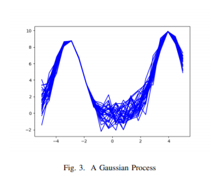

Bayesian RL based Recommendation System
When it comes to user customization it is essential to capture users preferences in an optimal manner so that the user can be served based on his past preferences. The concept behind this work is to formulate an a methodology for an online advertising shop to customize it’s advertisement presentation using the existing algorithms in the literature..

The task of the algorithm is to find the next shop to suggest for the user on his time line based on his past preferences. Users preferences will be captured by the ratings he give for a shop when it is shown in his time line and by the fact weather he marks some shop as visited. Most part of the final suggested algorithm follows the 2003 paper named Bayes Meets Bellman: The Gaussian Process Approach to Temporal Difference Learning
